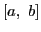
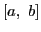

Very often we confine ourselves
to a portion only of the number system. For example, we may
restrict our variable so that it shall take on only such values
as lie between  and
and  , where and may be included, or
either or both excluded. We shall employ the symbol
, being less than ,
to represent the numbers , and all the numbers between
them, unless otherwise stated. This symbol
is read the interval from
to .
, where and may be included, or
either or both excluded. We shall employ the symbol
, being less than ,
to represent the numbers , and all the numbers between
them, unless otherwise stated. This symbol
is read the interval from
to .
david joyner
2008-08-11